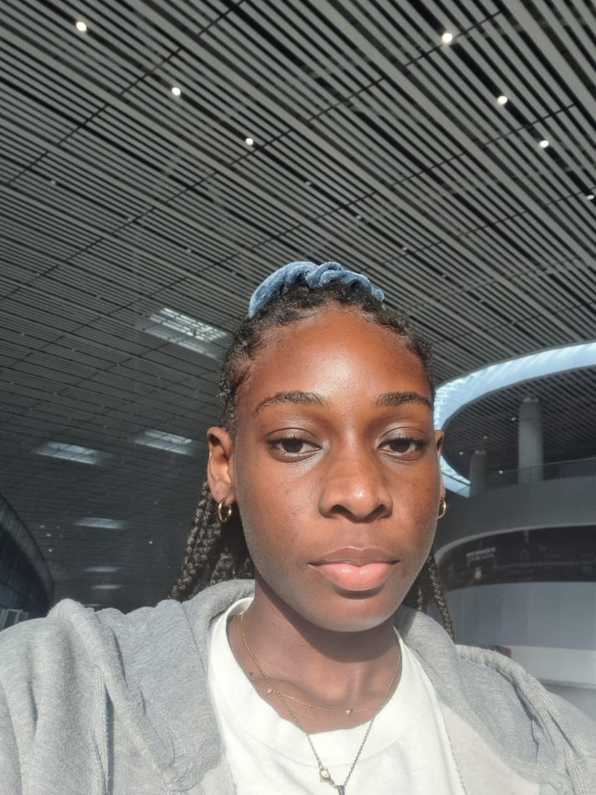

Riana Warner | WDD130
Hi! I'm Riana. I'm from the small island of Antigua. I spend a lot of my time at the beach, I love the ocean. I enjoy reading, coding, spending time with my family. I love photography, however I only ever take pictures of the clouds, I love the clouds because they're so surreal and they're a reminder that as big as I may think something is, it really isn't. My favorite thing to do on island would have to be going to the beach, there's just so much to choose from! The beach is one of my happy places, it's always fun being at the beach